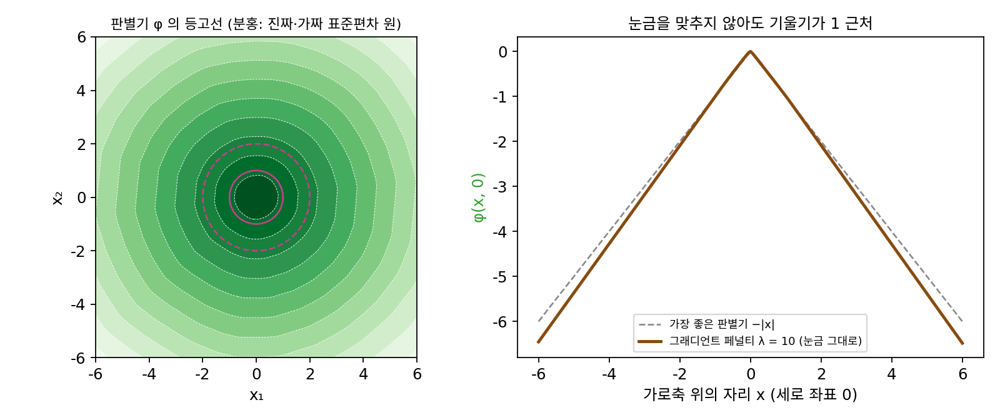
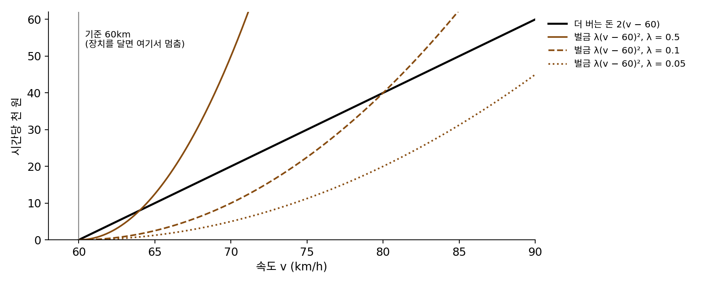
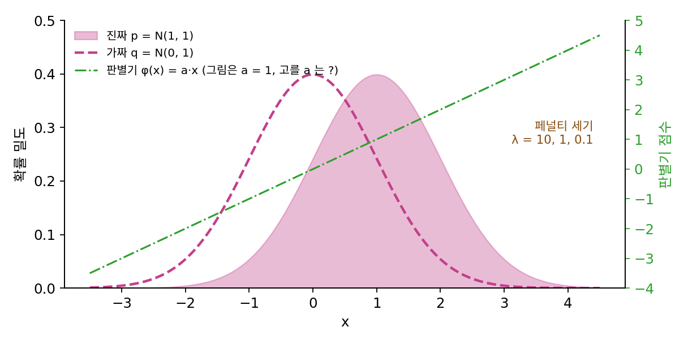
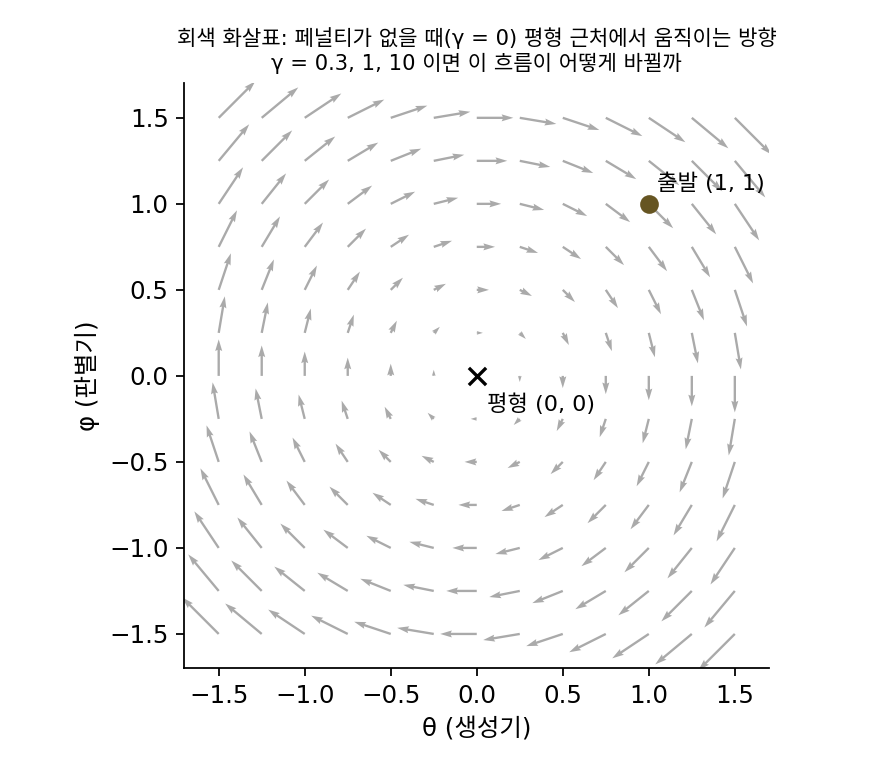

그래디언트 페널티: 그래디언트 길이를 1로 당긴다
가중치 자르기는 가중치를 묶었을 뿐 판별기의 그래디언트를 묶지는 않았기 때문에, 가중치는 경계로 몰렸고 판별기는 뭉툭해졌다. 그런데 흙 무더기의 점수표에서 본 것처럼, 가장 좋은 판별기는 진짜와 가짜를 잇는 길 위에서 그래디언트의 길이가 1이다. 그렇다면 가중치를 보지 말고 판별기의 그래디언트 자체를 재서, 길이가 1에서 벗어나면 벌을 주면 어떨까? 그런데 그래디언트를 평면의 모든 자리에서, 하물며 수만 차원인 그림 공간의 모든 자리에서 잴 수는 없다. 어디에서 재야 할까?
역사: 두 달 뒤의 고침
WGAN 이 공개되고 두 달 남짓 지난 2017년 3월 31일, 「바서슈타인 GAN 의 개선된 학습(Improved Training of Wasserstein GANs)」이 공개되었다(NIPS 2017). 지은이는 몬트리올 학습 알고리즘 연구소(MILA)의 이샨 굴라자니(Ishaan Gulrajani), 파루크 아메드(Faruk Ahmed), 뱅상 뒤물랭(Vincent Dumoulin), 에런 쿠르빌(Aaron Courville)과 아르좁스키다. 그들은 먼저 자르기의 병을 그림으로 보였다. 자르기로 끝까지 학습한 판별기는 데이터 분포의 굵은 윤곽만 따라가는 단순한 함수가 되었고, 층이 깊은 판별기에서는 그래디언트가 층을 지날수록 터지거나 사라졌으며, 가중치는 자르는 구간의 양 끝 두 값으로 몰렸다.
그들의 처방은 그래디언트의 길이에 직접 페널티를 주되, 모든 자리가 아니라 진짜 샘플과 가짜 샘플을 잇는 선분 위의 무작위 점에서만 재는 것이었다. 가장 좋은 판별기는 짝지어진 진짜와 가짜를 잇는 곧은 길 위에서 그래디언트 길이가 1이니, 그 길 위에서만 지켜도 충분해 보인다는 이유였다. 페널티의 세기는 모든 실험에서 10으로 두었고, Adam 을 학습률 0.0001, β₁ = 0, β₂ = 0.9로 썼다. 그래디언트 길이가 1을 넘을 때만 벌하는 한쪽 페널티와 1에서 벗어나면 양쪽 다 벌하는 두쪽 페널티를 구조 174개에서 견줘 보니 두쪽 페널티가 100번, 한쪽 페널티가 77번 더 좋았지만 뚜렷한 차이는 아니라고 적었다. 이 방법으로 그들은 101층짜리 잔차 신경망까지 별다른 조정 없이 학습시켰다.

그래디언트 길이에 벌을 주는 거면 손실에 한 줄 더하는 거잖아요. 저라면 바로 해 봤을 것 같은데, 두 달이나 걸렸네요.

그 한 줄을 학습시키려면 무엇을 미분해야 하죠?

페널티를 가중치로 미분… 그런데 페널티 안에 이미 판별기의 그래디언트가 들어 있으니까, 그래디언트를 또 미분하는 거네요.

그래요. 굴라자니와 동료들은 텐서플로로 짰는데, 파이토치에는 그렇게 두 번 미분하는 기능이 그해 8월에 나온 0.2 판에야 들어왔어요.

도구가 있어도 어디서 잴지가 남잖아요. 그림 공간 전체에서 잴 수는 없으니까요.
그래서 진짜와 가짜를 잇는 선분 위의 점만 골랐죠. 그것으로 충분하다는 증명은 없었고, 논문의 말로는 「충분해 보인다」였어요.

그럼 같은 평면 실험에서 그 선분 위에서만 벌을 줘도, 판별기가 원점에서 뾰족한 원뿔 모양을 찾아낼까요?
같은 실험에 페널티를
가중치 자르기에서 쓴 평면 위 실험을 그대로 두고 자르기만 페널티로 바꾸자. 스텝마다 진짜 샘플 x와 가짜 샘플 y를 짝지어 그 사이 무작위 점 x̂ = tx + (1 − t)y(t는 0과 1 사이에서 고르게 뽑은 수)에서 판별기의 그래디언트를 재고, 그 길이가 1에서 벗어난 만큼의 제곱에 λ = 10을 곱해 판별기의 손실에 더한다. 굴라자니와 동료들의 설정대로 Adam 으로 6,000스텝 학습시켰다(씨앗 고정).
판별기가 매긴 점수 차는 1,000스텝에 0.6236, 2,000스텝에 1.3496이 되었고, 6,000스텝 뒤에는 1.3619다. 자르기와 달리 눈금을 맞추지 않은 점수 차가 그대로 참값 1.2533 근처에 온다. 진짜와 가짜 사이 무작위 점에서 잰 그래디언트 길이는 평균 1.0712(표준편차 0.0371)로 1에 가깝게 모였다. 점수 차를 그래디언트 최댓값 1.141로 나누면 1.194로, 참값의 95%다. 자르기의 76%보다 판별기의 모양이 훨씬 가장 좋은 판별기에 가깝다.
이렇게 진짜와 가짜를 잇는 선분 위의 무작위 점에서 판별기의 그래디언트 길이가 1에서 벗어난 만큼 페널티를 주어 판별기의 립시츠 상수를 1 근처로 당기는 방법을 그래디언트 페널티 (그래디언트 길이를 1로 당기는 페널티 / gradient penalty)라 한다. 이 방법을 쓴 WGAN 을 WGAN-GP 라 줄여 부른다.
점수 차가 참값보다 9% 큰 1.3619로 나온 것은 페널티가 제약이 아니라 벌금이기 때문이다. 그래디언트 길이가 1을 조금 넘으면 페널티는 조금 늘지만 점수 차도 늘어나니, 판별기는 두 이익이 맞서는 자리, 곧 1보다 조금 큰 그래디언트 길이에서 멈춘다. 그 균형점이 어디인지는 아래 문제 13에서 계산한다.

ML에서: 진짜 데이터에서만 재는 페널티
그래디언트 페널티는 그 뒤 GAN 학습의 기본 기법이 되었고, 변형도 나왔다. 메셰더와 동료들은 디랙 GAN 을 따진 2018년 논문에서, 진짜 데이터에서만 판별기 그래디언트의 길이 제곱에 페널티를 주는 방법(R1 페널티라 부른다)을 내고, 이 페널티가 평형 둘레를 맴도는 움직임을 평형으로 끌어당긴다는 것을 보였다. 그래디언트를 1이 아니라 0으로 당긴다는 점이 WGAN-GP 와 다르다. 엔비디아의 테로 카라스(Tero Karras), 사무리 라이네(Samuli Laine), 티모 아일라(Timo Aila)는 2019년 고해상도 얼굴을 만든 StyleGAN 을 학습할 때, 얼굴 사진 모음 FFHQ 에서 처음에는 WGAN-GP 를 쓰다가 원래 GAN 손실을 뒤집은 손실과 R1 페널티(세기 10)로 바꿨다고 적었다. 페널티가 맴돌기를 어떻게 멈추는지는 아래 문제 14에서 디랙 GAN 으로 직접 본다.
문제 12. 과속 벌금이 속도의 제곱으로 늘면
배달 기사가 기준 속도 시속 60km보다 1km 빨리 달릴 때마다 시간당 2천 원을 더 번다. (가) 속도를 시속 60km에서 기계로 막는 장치를 달면 더 버는 돈은? (나) 장치 대신 시간당 벌금 λ·(v − 60)²천 원을 매긴다. λ = 0.5, 0.1, 0.05일 때 기사가 고르는 속도는? (다) 벌금 세기를 5로 올리면?

벌금을 매기면 다들 60을 지키겠죠. 벌금 내면서까지 빨리 달릴 사람은 없잖아요.
기사의 이익은 2(v − 60) − λ(v − 60)²이에요. 60km에서 조금 더 밟으면 이익이 늘어날까요, 줄어들까요?

조금만 넘으면 버는 돈은 1km에 2천 원씩 늘고, 벌금은 제곱이라 아주 조금 늘어요. 그러니까 조금은 넘는 게 이익이네요. 미분해서 0으로 놓으면 v = 60 + 1/λ이고, 0.5면 62km, 0.1이면 70km, 0.05면 80km예요.

벌금 세기를 5로 올리면 60.2km야. 세기를 아무리 올려도 60km에 다가갈 뿐 60이 되지는 않아. 장치라면 정확히 60이고 더 버는 돈이 0인데, 벌금이면 늘 조금 넘고 그만큼 조금 더 벌어.

장치와 벌금 가운데 그래디언트 페널티는 어느 쪽일까요?

벌금이에요. 판별기의 점수 차가 기사가 더 버는 돈이고, (‖∇φ‖ − 1)²이 벌금이에요. 그래서 판별기의 그래디언트 길이가 1보다 조금 크게 자리 잡은 거고요. 가중치 자르기는 장치에 가깝지만, 막는 대상이 속도가 아니라 엔진의 부품 하나하나였던 셈이고요.

과제 늦게 내면 하루에 10%씩 깎는 수업에서, 하루 늦게 내고 더 잘 쓰는 게 낫다고 계산하는 친구들이 꼭 있었는데, 그게 이 계산이었네요.
문제 13. 직선 판별기에 페널티를
진짜 분포 p = N(1, 1), 가짜 분포 q = N(0, 1)이다(바서슈타인 거리는 1). 판별기를 직선 φ(x) = ax로 놓고 그래디언트 페널티를 쓰면, 판별기가 키우는 목적은 a − λ(|a| − 1)²이다. (가) λ = 10, 1, 0.1에서 목적을 가장 크게 하는 a와 그때의 점수 차는? (나) 판별기의 점수 차를 바서슈타인 거리로 읽으면 몇 % 틀리는가? (다) 기울기가 1을 넘을 때만 벌하는 한쪽 페널티면 답이 바뀌는가?

페널티가 기울기를 1로 맞춰 주니까 a = 1이고, 점수 차도 정확히 바서슈타인 거리 1이겠지.
a = 1에서 목적을 a로 미분하면 얼마죠?
1 − 2λ(a − 1)이니까 a = 1에서 1이에요. 0이 아니네요. 아직 더 올라갈 수 있어요.
그럼 어디서 멈추죠?
0으로 놓으면 a = 1 + 1/(2λ)예요. λ = 10이면 1.05, 1이면 1.5, 0.1이면 6이에요.
점수 차는 a × (평균 차 1)이니까 1.05, 1.5, 6이야. λ = 10이면 5%, 1이면 50% 크게 나오고, 0.1이면 여섯 배나 커.
평면 실험에서 그래디언트 페널티로 학습한 판별기는 점수 차가 참값보다 9% 컸고 사이 점의 그래디언트 길이가 평균 1.07이었어요. 이 계산과 같은 이야기인가요?
네. 직선에서는 5% 넘치고, 평면 실험은 판별기 모양도 완벽하지 않으니 똑같진 않지만 「1보다 조금 큰 그래디언트 길이에서 멈춘다」는 건 같아요.
(다)의 한쪽 페널티는요?
a > 1인 쪽에서는 한쪽 페널티도 같은 식이라… 답이 a = 1 + 1/(2λ)로 같아요. 페널티가 넘친 쪽만 막는 거니까요.
그럼 λ를 아주 크게 잡으면 되겠네.

점수 차를 거리로 읽으려면 λ가 클수록 좋지만, 너무 크면 학습이 페널티 맞추기에만 매달리겠지. 라그랑주 승수법 대신 페널티법으로 제약을 풀면 답이 제약을 조금 넘는다고 배웠던 거야.

그래서 WGAN-GP 의 손실 값을 그대로 「거리」라고 보고서에 쓰면 안 되고, 줄어드는 추세를 보는 데 쓰는 게 맞겠네요.
문제 14. 디랙 GAN 에 R1 페널티를
디랙 GAN(진짜는 0 한 점, 생성기는 θ 한 점, 판별기 D(x) = sigmoid(φx))에서 판별기의 목적에 R1 페널티 −(γ/2)·(진짜 점에서 로짓 φx를 x로 미분한 값)² = −(γ/2)φ²을 더한다. (가) (1, 1)에서 학습률 0.1의 동시 업데이트로 γ = 0, 0.3, 1, 10일 때 100스텝, 500스텝 뒤 평형까지의 거리는? (나) 페널티를 걸면 왜 맴돌기가 멈추는가? (다) γ를 크게 할수록 빨리 닿는가?

페널티가 없으면 동시 업데이트가 바깥으로 감겼죠. 100스텝에 1.587, 500스텝에 2.179예요. γ = 0.3이면 0.4505, 0.0018이고 γ = 1이면 0.1874, 500스텝에는 소수 넷째 자리까지 0이에요. 페널티는 세게 걸수록 좋겠네요. 10이면 더 빠르겠죠.
10도 돌려 봐요.

어, 0.8467, 0.3152예요. 1일 때보다 훨씬 느려요. 3000스텝 뒤에도 0.0006이 남아요.
페널티 −(γ/2)φ²은 θ·φ 놀이에서 엎은 그릇 −½φ²을 더하던 거랑 같아. φ를 0으로 끌어당기는 힘이 생기니까, 문제 3에서 없던 「판별기가 점수 매기기를 멈추고 돌아오는 힘」이 생긴 거야.
평형 근처에서 한 스텝을 행렬로 쓰면 [[1, 0.05], [−0.05, 1 − 0.1γ]]예요. 두 고윳값의 크기를 보면 (다)가 풀릴 거예요.
γ = 0.3이면 둘 다 0.986, 1이면 둘 다 0.95, 10이면 0.0025와 0.9975예요.
10에서 0.9975는 어느 방향이죠?
φ 방향은 거의 한 번에 0이 되니까… θ 쪽이에요. θ는 φ가 밀어 줘야만 움직이는데 그 힘이 사라져서 0.9975배씩 기어가요.
페널티가 너무 세면 판별기가 생성기에게 줄 신호까지 눌러 버리는 거네.
경사하강에서 학습률을 키워도 조건수 때문에 느린 방향이 남던 것처럼, 가장 느린 고윳값이 스텝 수를 정하네요.
조별 과제에서 서로 지적을 너무 조심하게 하면 싸움은 안 나는데 고칠 점도 안 나와서 진도가 안 나가는 거군요. 적당히 끌어당겨야 빨리 끝나요.